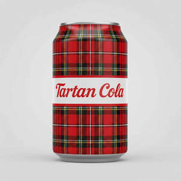

Trade Mark Journal No.2025/045 7 November 2025
UK00004271597 30 September 2025 (30,32,33)

- Class 30
- Soft pretzels; Soft ices; Drinks flavoured with chocolate; Cocoa drinks; Coffee drinks; Aerated drinks [with coffee, cocoa or chocolate base]; Soft caramels; Drinks prepared from chocolate; Carbonated and non-carbonated tea based beverages; Chocolate drink preparations flavoured with mocha; Drinks prepared from cocoa; Chocolate drink preparations flavoured with orange; Chocolate drink preparations flavoured with banana; Chocolate drink preparations; Chocolate drink preparations flavoured with mint; Aerated beverages [with coffee, cocoa or chocolate base]; Coffee beverages with milk; Tea beverages with milk; Chocolate flavoured beverages; Chocolate drink preparations flavoured with nuts; Chocolate drink preparations flavoured with toffee; Chocolate based drinks; Chocolate beverages with milk; Drinks containing chocolate; Chocolate beverages; Prepared coffee and coffee-based beverages; Soft rolls [bread]; Coffee based drinks; Iced lollies; Crystallized lemon juice [seasoning]; Iced fruit cakes; Iced coffee; Lime tea; Iced tea; Tea (Iced -); Flavourings of lemons for food or beverages; Lime blossom tea; Iced cakes; Flavourings of lemons; Ice cream drinks; Fruit flavoured water ices in the form of lollipops; Iced sponge cakes; Tea beverages; Iced teas; Teas (Non-medicated -) flavoured with lemon; Iced tea (Non-medicated -); Soda bread; Flavoured sugar confectionery; Flavoured popcorn; Beverages with a chocolate base; Ice lollies being milk flavoured; Ice beverages with a chocolate base; Chocolate with alcohol; Chocolate flavoured confectionery; Tea-based beverages with fruit flavoring; Drinking chocolate; Ice beverages with a coffee base; Cocoa beverages with milk; Ice beverages with a cocoa base; Liquorice flavoured confectionery; Caffeine-free coffee; Mixtures of malt coffee with cocoa; Sorbet infused with alcohol; Candies (Non-medicated -) with alcohol; Sweets (Non-medicated -) being alcohol based; Ice cream infused with alcohol; Water ice; Sea water for cooking; Water (Sea -) for cooking; Water ices; Coffee beverages; Tea-based beverages; Beverages (Tea-based -); Flavourings of tea for food or beverages; Coffee-based beverages; Beverages (Coffee-based -); Prepared coffee beverages; Drinks containing cocoa.
- Class 32
- Soft drinks; Carbonated soft drinks; Non-carbonated soft drinks; Coffee-flavored soft drinks; Fruit-flavored soft drinks; Low-calorie soft drinks; Colas [soft drinks]; Soft drinks flavored with tea; Fruit flavored soft drinks; Fruit-based soft drinks flavored with tea; Low calorie soft drinks; Powders for making soft drinks; Syrups for making soft drinks; Soft drinks for energy supply; Syrups used in the preparation of soft drinks; Powders used in the preparation of soft drinks; Carbonated non-alcoholic drinks; Concentrates for use in the preparation of soft drinks; Concentrates used in the preparation of soft drinks; Non-alcoholic drinks; Cola drinks; Isotonic non-alcoholic drinks; Fruit flavoured carbonated drinks; Non-alcoholic malt drinks; Non-alcoholic sparkling fruit juice drinks; Juice drinks; Non-alcoholic fruit drinks; Non-alcoholic beverages flavoured with coffee; Non-alcoholic vegetable juice drinks; Non-alcoholic carbonated beverages; Non-alcoholic flavored carbonated beverages; Non-alcoholic beverages flavored with coffee; Non-alcoholic soda beverages flavoured with tea; Non-alcoholic beverages flavoured with tea; Isotonic drinks; Non-alcoholic beverages flavored with tea; Fruit flavored drinks; Flavoured carbonated beverages; Non-alcoholic beer flavored beverages; Fruit flavoured drinks; Orange juice drinks; Non-alcoholic beverages with tea flavor; Fruit drinks; Slush drinks; Non-alcoholic grape juice beverages; Fruit juice beverages (Non-alcoholic -); Non-alcoholic fruit juice beverages; Frozen carbonated beverages; Apple juice drinks; Fruit juice drinks; Sarsaparilla [non-alcoholic beverage]; Aloe vera drinks, non-alcoholic; Smoothies [non-alcoholic fruit beverages]; Coconut water as a beverage; Coconut water as beverage; Guarana drinks; Non-alcoholic malt beverages; Cordials (non-alcoholic beverages); Non-alcoholic beverages; Beverages (Non-alcoholic -); Vegetable drinks; Frozen fruit-based drinks; Fruit-flavoured beverages; Kvass [non-alcoholic beverage]; Fruit beverages (non-alcoholic); Frozen fruit drinks; Non-alcoholic dried fruit beverages; Kvass [non-alcoholic beverages]; Non-alcoholic honey-based beverages; Honey-based beverages (Non-alcoholic -); Tonic water [non-medicated beverages]; Smoked plum juice beverages; Non-alcoholic fruit vinegar beverages; Sherbet beverages; Carbohydrate drinks; Powders used in the preparation of coconut water drinks; Syrups for making fruit-flavored drinks; Carbonated water; Douzhi (fermented bean drink); Iced fruit beverages; Lemonade; Syrups for lemonade; Lemonades; Syrup for making lemonade; Watermelon juice; Pineapple juice beverages; Lemon juice for use in the preparation of beverages; Tomato juice beverages; Tomato juice [beverage]; Orange juice beverages; Ginger juice beverages; Aloe juice beverages; Grape juice beverages; Apple juice beverages; Lime juice for use in the preparation of beverages; Lime juice cordial; Cream soda; Fruit juice beverages; Fruit juice for use as beverages; Grapefruit juice; Cranberry juice; Non-alcoholic fruit cocktails; Non-alcoholic syrups for making beverages; Syrups for making non-alcoholic beverages; Red ginseng juice beverages; Soda water; Orange juice; Sherbets [beverages]; Coconut juice; Pomegranate juice; Sorbets [beverages]; Cider, non-alcoholic; Fruit-flavored beverages; Melon juice; Mixes for making sorbet beverages; Syrup for making beverages; Blackcurrant juice; Fruit juice; Juice (Fruit -); Flavored beer; Bitter lemon; Cordials [non-alcoholic]; Non-alcoholic cordials; Cocktails, non-alcoholic; Non-alcoholic cocktails; Seltzer water; Water (Seltzer -); Non-alcoholic beer; Cola; Soda pops; Coffee-flavored beer; Carbonated mineral water; Flavored mineral water; Soy beverage; Coffee-flavored ale; Low alcohol beer; Alcohol free beverages; Alcohol free wine; Alcohol free cider; Alcohol free aperitifs; Non-alcoholic malt free beverages [other than for medical use]; Non-alcoholic wine; Alcohol-free beers; Malt syrup for beverages; Root beers, non-alcoholic beverages; Distilled drinking water; Energy drinks containing caffeine; Water; Aerated water [soda water]; Drinking water; Bottled water; Mineral water; Drinking mineral water; Aerated water; Bottled drinking water; Coconut water; Sparkling water; Drinking spring water; Purified drinking water; Lithia water; Water (Lithia -); Tonic water; Glacial water; Spring water; Drinking water with vitamins; Quinine water; Mineral water [beverages]; Birch water; Energy drinks; Sports drinks; Beer-based beverages; De-alcoholized drinks; Fruit-based beverages; Syrups for beverages; De-alcoholised drinks; Squashes [non-alcoholic beverages]; Isotonic beverages; Sports drinks containing electrolytes; Non-alcoholic beers; Non-alcoholic beer-based cocktails; Powders used in the preparation of fruit-based drinks.
- Class 33
- Low alcoholic drinks; Alcoholic fruit cocktail drinks; Wine-based drinks; Alcoholic carbonated beverages, except beer; Alcoholic energy drinks; Alcoholic tea-based beverage; Alcoholic coffee-based beverage; Wine coolers [drinks]; Tonic liquor flavored with japanese plum extracts (umeshu); Rum [alcoholic beverage]; Flavored tonic liquors; Alcoholic seltzers; Flavored brewed alcoholic malt beverages, except beers; Flavoured brewed alcoholic malt beverages, except beers; Sugar cane juice rum; Nira [sugarcane-based alcoholic beverage]; Alcohol (Rice -); Aperitifs with a distilled alcoholic liquor base; Sugarcane-based alcoholic beverages; Pre-mixed alcoholic beverages; Alcoholic beverages, except beer; Alcoholic beverages (except beer); Beverages (Alcoholic -), except beer; Pre-mixed alcoholic beverages, other than beer-based; Grain-based distilled alcoholic beverages; Alcoholic cocktails; Cordials [alcoholic beverages]; Alcoholic beverages of fruit; Alcoholic fruit beverages; Alcoholic beverages except beers; Alcoholic beverages (except beers); Alcoholic beverages [except beers]; Alcoholic cocktails containing milk; Alcoholic beverages containing fruit; Fruit (Alcoholic beverages containing -); Alcoholic cordials; Alcoholic bitters; Ginseng liquor; Alcoholic aperitifs; Alcoholic punches; Alcoholic essences; Alcoholic cocktail mixes; Prepared alcoholic cocktails; Alcoholic aperitif bitters; Preparations for making alcoholic beverages; Alcoholic preparations for making beverages; Distilled beverages; Beverages (Distilled -); Alcoholic extracts; Rum-based beverages; Wine-based beverages; Spirits [beverages]; Cocktails.
Satvinder Singh